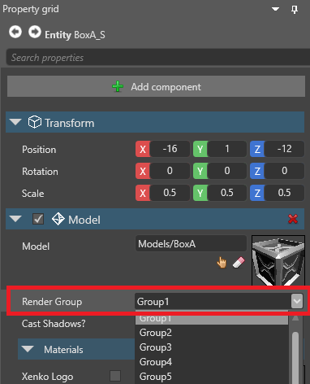
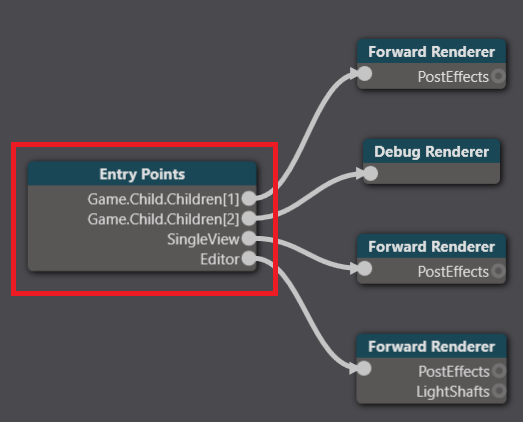

レンダーグループとレンダーマスク
中級 デザイナー
レンダーグループとレンダーマスクを使って、シーンのどの部分をどのカメラ でレンダリングするかを指定することができます。例えば、あるモデルを、カメラAには映るがカメラBには映らないようにすることができます。
レンダーグループを設定する
シーンから、レンダーグループに追加したいコンポーネント（モデルやUIコンポーネントなど）を持つエンティティを選択します。
プロパティグリッドで、エンティティが属するグループを Render group プロパティに設定します。

レンダーマスクを設定する
レンダーマスクは、レンダリングするグループをフィルタリングします。
アセットビューで、グラフィックスコンポジターアセットをダブルクリックします。

すると、グラフィックスコンポジターエディターが開きます。

Entry points ノードを選択します。

プロパティグリッドで、は、モデルをレンダリングしたいレンダラーを展開します。
Render mask の横にある [Change values...] をクリックし、カメラに映したいレンダーグループを選択します。